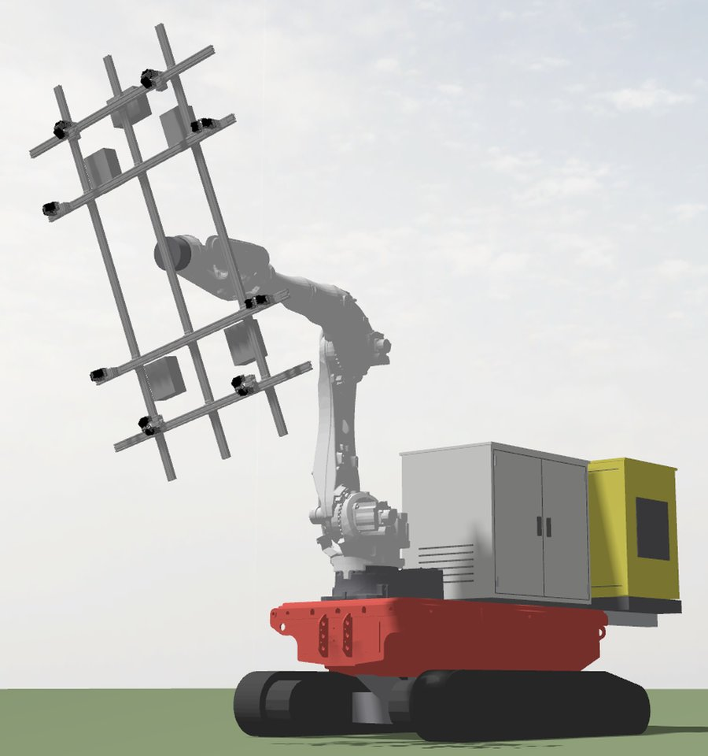

A robot that places solar panels on racking.
Becrux Precession is developing Mimosa (Beccy) — named for Beta Crucis, the star also called Becrux — a robot that picks solar panels from a pallet and places them on racking. It is built from proven industrial parts — a tracked carrier, an industrial robot arm and our own frame gripper.

Why hold the frame
Existing solar robots hold panels by suction on the glass. Module manufacturers' installation instructions say to hold modules by their edges.
Our gripper clamps the aluminium frame instead. Panel, gripper and tooling form one closed structure, so pushing, aligning and clamping forces react against the gripper frame, not against vacuum seals.
Holds by the frame
Actuated clamps close on the module frame, never on the glass.
Sloped racking
A rigid hold is what placing panels on fixed-tilt racking needs.
Fastening
Fastening tools can sit within centimetres of the clamping points.
The problem
Large-scale solar build rates are limited by labour. Panels of 25–35 kg are still carried, placed and fastened by hand. A robot that places panels, and goes on to fasten them, lowers installation cost and lets projects build faster.
Where we are
- A laboratory prototype of the frame gripper: sixteen actuated clamps holding and releasing a production solar module.
- The complete machine modelled in ROS 2 from the manufacturers' CAD.
- Next: the first complete machine, then ten panels in a row from pallet to tracker-type racking at a test site, then trials at a solar site with installers fastening behind it.
Contact
Installers, developers and investors interested in trialling or supporting Mimosa: admin@becrux.au